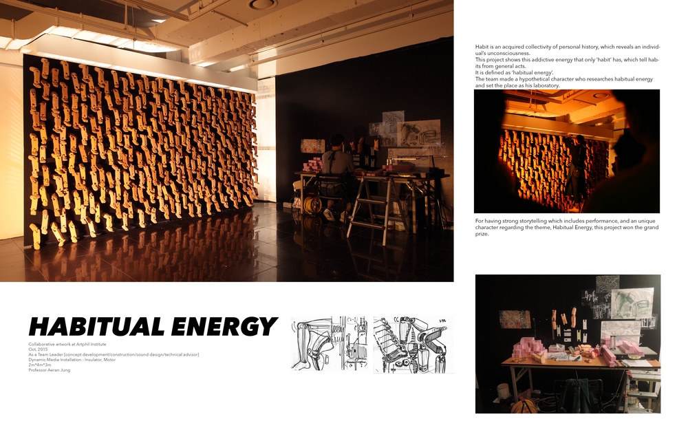

youjin-c.github.io
| ︎ | ︎ | ︎ |
Habitual Energy
Collaborative artwork at Artphil Institute
Team Leader [concept development/construction/sound design/technical advisor]
Dynamic Media Installation : Insulator, Motor
2m4m3m
Professor Aeran Jung

Habit is an acquired collectivity of personal history, which reveals an
individual’s unconsciousness.
This project shows this addictive energy that only ‘habit’ has, which tell
habits from general acts.
It is defined as ‘habitual energy’.
The team made a hypothetical character who researches habitual energy and set
the place as his laboratory.
For having strong storytelling which includes performance, and an unique
character regarding the theme, Habitual Energy, this project won the grand
prize.